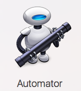
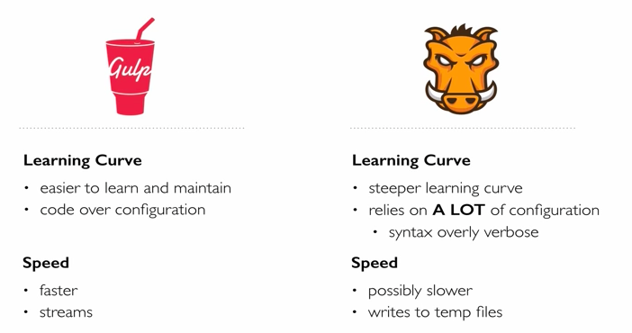
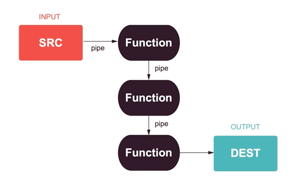

Introduction
This course will give an overview of the most common tools used to automate front-end tasks.
At first, task automation concepts will be explained before diving into the nuances and individualities of each tool, namely Grunt and Gulp. The course will focus on how to do common automations and how to do them using each tool. After exploring the approaches and main functions of each one, the course will wrap up with an overview of bonus not-so-popular tools, a series of exercises, and some sources for further exploration.
A quiz will be applied after the course has ended, so the students can assess their own level of knowledge retention.
What are task automators?
In general terms, task automator can be any script that someone may write in order to do a series of things sequentially or to avoid having to perform repetitive tasks. It's possible to relate this with bash scripts that run on terminals. On Mac computers, for example, we have an app called Automator, which can guide the user to do its own script through a graphic interface.
With that in mind, we can say this is not a new concept. What is in fact new is this idea of automating processes being integrated with web development and how associating this kind of tool with your development environment can come in hand to increase performance and maintenance while coding.
Back to your Computer Science days at the University, you probably came across a makefile, a special file that
would have steps for building your executable code and would compile your C/C++ code just by running a simple command on your
terminal: make. That's also the name of the platform that automates processes and give birth to similar tools in other languages,
such as rake for Ruby.
So, bringing the topic to web development context, the Javascript version for what we have seen before are the most famous tools used by community, namely Grunt.js and Gulp.js. Each one has its own way of making programmers life easier by automating recurrent and annoying tasks that otherwise you should have to do manually.
Why use them?
If the reason for using these tools are not clear yet, let me be as straightforward as I can: we don't want to do repetitive tasks! Humans are good on thinking, computers are good on iterating, using wildcards, anything that is batch work. Furthermore, there is always a plugin available to not let you reinvent the wheel. Therefore, these tools are generally used to perform most of the concepts below:
- Concatenate: merge files together.
- Minification: JS files are commonly minified to occupy less space on server. Sometimes known as Uglify.
- Compilation: build the project; we can build subroutines so we can build parts that might not be dependant on each other.
- Watch: this is an important task! We are going to be able to see the effect of our changes in real-time. May involve copying files.
- Unit Testing / Test Coverage
- Linting: verifies if there is something wrong with syntax and code standards.
- Error Management: if an error occurs, maybe the process is able to finish and you can just re-run the subtask that has failed.
- Deploy routine: we can use one command to deploy a new app version on the server.
- Creative usage: power is limitless.
Many issues can be solved by reaching out to the community, as the support for the main tools we are talking about is large enough to embrace the common path one might take to get started and in a good development pace.
I will disclose the details for each task runner in the proper sections inside each tool topic.
Main tasks to be performed
We will focus this course on just some of the tasks mentioned above and they are going to be learned for both Grunt and Gulp. The other tasks will remain as a bonus for your studies. Before going into the next section, be sure your environment meet the prerequisites for this course, which are:
- Node.js LTS installed
- Node Package Manager - NPM commands
- Comfortable with Javascript Syntax
I recommend installing the tools globally, meaning it will make the executable command available in the whole system, from any folder you would like to run it. If you prefer to install the packages just locally, be aware to reach out to the node_modules folder and search for the binary inside.
Grunt.js
Community support and background
Around 2013, Grunt.js was already known as a well supported platform and their addicted users would brag about having a great range of plugins. Recently, with different approaches from other tools, Grunt released version 1.0.0 in April 2016. Some say the paradigms are changing the Grunt way, but let's keep the old approach just for didactical reasons.
We will heavily rely on community support by attaching plugins to our application. Check out more at: Official Plugins Page. With no further ado, let's dive into it.
Installation
We start by creating an empty package.json. Just insert a name for your project and then type enter to every other option that might appear.
npm init
npm install grunt --save-dev
Don't forget to get the src folder from our repository. Now grab this sample Gruntfile.js and we will start analysing it.
module.exports = function(grunt) { grunt.initConfig({ jshint: { files: ['Gruntfile.js', 'src/**/*.js', 'test/**/*.js'], options: { globals: { jQuery: true } } }, watch: { files: ['<%= jshint.files %>'], tasks: ['jshint'] } }); grunt.loadNpmTasks('grunt-contrib-jshint'); grunt.loadNpmTasks('grunt-contrib-watch'); grunt.registerTask('default', ['jshint']); };
Let's break this file into subsets:
module.exports = function(grunt) {};
grunt.initConfig({});
grunt.loadNpmTasks('grunt-contrib-jshint'); grunt.loadNpmTasks('grunt-contrib-watch');
grunt.registerTask('default', ['jshint']);
The rest of the code are task declarations that almost always match the plugin name after grunt-contrib.
Inside, each task has its own way of functioning, but some similarities already show up when we compare what we have
at hand. files: [] is a common attribute that will reference which source might be considered for that particular task.
It's possible to see interesting wildcards on the path names: ** stands for any folder, whilst *
stands for any file to be matched.
Furthermore, we can also perceive the Underscore template that is referencing
variables or attributes inside the same file.
Are you ready to rumble?
Try running grunt. What do you see? Missing something, eh? Install those plugins, always remembering the tag that applies our changes to be reminded by our beloved package.json file.
npm install grunt-contrib-jshint grunt-contrib-watch --save-dev
Try running grunt. What do you see? Whoa! What did you do to my code? Easy now. That's
JSHint showing himself off. Nothing to worry about, actually from now on we are going to be glad if he pops up, telling us
our code is not well-formatted.
Watch
One of the most important tasks in my opinion, watch will enhance your development experience as you may leave it running and make it aware of every change that happen on the files listed inside your task definition.
Concatenate
It is great to have separate files with different concerns but when it comes to build it is kind of cumbersome to not have everything in one spot. That's why we are learning this technique.
pkg: grunt.file.readJSON('package.json'), concat: { options: { // define a string to put between each file in the concatenated output separator: ';' }, dist: { // the files to concatenate src: ['src/**/*.js'], // the location of the resulting JS file dest: 'dist/<%= pkg.name %>.js' } },
More terminal errors? Fear not! We shall do the same procedure of installing the plugin and add it to the bottom of our Gruntfile, so it recognizes the task.
npm install grunt-contrib-concat --save-dev
grunt.loadNpmTasks('grunt-contrib-concat');
Uglify
Minification with variable name editing so they occupy less space in storage, amongst other perks.
uglify: { options: { // the banner is inserted at the top of the output banner: '/*! <%= pkg.name %> <%= grunt.template.today("dd-mm-yyyy") %> */\n' }, dist: { files: { 'dist/<%= pkg.name %>.min.js': ['<%= concat.dist.dest %>'] } } }
Gulp.js
Community support and background
Gulp.js is another tool we are going to focus on learning. It has become very popular over the past years, known by some features, approaches and learning curve. Although Grunt's community remains larger (some may doubt this), Gulp.js is getting more and more users and contributor, making it nowadays as reliable as its challenger. So, you might choose your flavor, but let me advocate a little better towards our topic.
Why Gulp.js?
Gulp.js is promoted to be faster than Grunt. It relies on the power of node streams, making quick builds that don't write intermediary files to disk, quite a negative point from Grunt. Instead, Gulp keeps its intermediary files on memory and just write down the stream when the destination is set. From its fundamentals, and differing again from Grunt, Gulp.js prefers code over configuration, keeping things simple and making the learning curve less steeper and the tasks more manageable.
Moreover, Gulp.js plugins are designed to do only one thing, whereas Grunt plugins may perform multiple tasks. In this way, Gulp feels like it's better at separation of concerns, a key concept on web development. It also interesting that Gulp.js comes with some features built-in that Grunt would have to call an external plugin to do that basic job.
Gulp approach: Node Streams and Pipe
The most important Gulp concept is stream. Think of your files passing through a pipe; at one or more points along that pipe, an action is taken.
For that matter it is crucial to remember that chaining - or using the highlighted expression: piping - functions together will demand a return from each task, and enable it to flow through the pipe. For a similar result, chaining tasks will demand the exact same behavior.
Most used commands
- gulp.src: reach out to where are the files to be considered for the task
- gulp.dest: generally where the pipe dumps its content after all the processing has been made.
srcanddestdo together a good copy and paste. - gulp.task: declare and register a task
- gulp.watch: our glorious helper that will be waiting for an event of change, add or deletion to trigger and run a task.
watchandtaskreturn an EventEmitter that emitschangeevents.
Are you ready to rumble?
Let's get started the same way we did on the Grunt.js part. npm init for creating an empty package.json and then as we go through the topics, we start adding the devDependencies to our package.json with our old acquaintance --save-dev. Grab the file below and let's start coding.
var gulp = require('gulp'), gutil = require('gulp-util'); gulp.task('log', function() { return gutil.log('Gulp is running!') }); gulp.task('default', ['log'], function() { gutil.log('Thanks for using Gulp!'); });
This is a bit tricky because we are using the stylish plugin and somehow there are some dependencies to be met. Since it's not so straightforward, let me show you the command:
npm install jshint gulp-jshint jshint-stylish --save-dev
var gulp = require('gulp'), gutil = require('gulp-util'), jshint = require('gulp-jshint'); var jsfiles = './src/js/*.js'; gulp.task('log', function() { return gutil.log(gutil.colors.red('Gulp'), gutil.colors.green('is running!')); }); gulp.task('lint', function () { gulp.src(jsfiles) .pipe(jshint()) .pipe(jshint.reporter('jshint-stylish')) .pipe(jshint.reporter('fail')); }); gulp.task('default', ['log'], function() { gutil.log('Thanks for using', gutil.colors.red('Gulp!')); });
Watch
One of the most important tasks in my opinion, watch will enhance your development experience as you may leave it running and make it aware of every change that happen on the files listed inside your task definition.
Yes, it is incredible that you remind those words. But now, with Gulp we can do that without importing plugins, natively, using gulp.watch.
gulp.task('watch', function () { gulp.watch(jsfiles, ['lint']); });
Concatenate
It is great to have separate files with different concerns but when it comes to build it is kind of cumbersome to not have everything in one spot. That's why we are learning this technique.
npm install --save-dev gulp-concat
gulp.task('concat', function () { gulp.src('src/js/*.js') .pipe(concat('all.min.js')) .pipe(gulp.dest('dist')); });
Uglify
Just append .pipe(uglify()) after your concat command.
example: a huge gulpfile
Del - delete files and folders
gulp.task('emptyTrash', function () { return del([ 'dist', 'src/trashbin/junk3.txt', // delete this specific file 'src/trashbin/old/**/*', // delete whatever is inside trashbin/old '!src/trashbin/new/newjunk.txt' // explicitly DO NOT delete this file ]); });